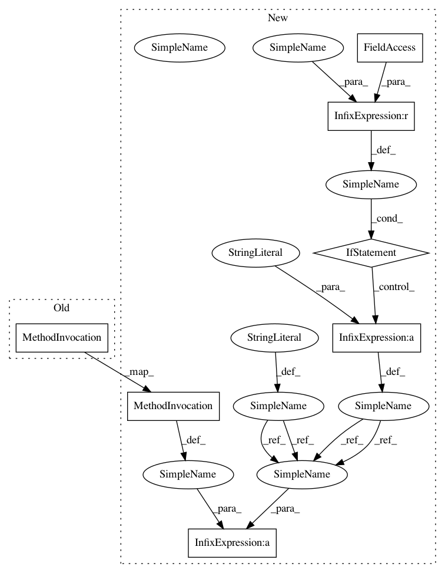

cf4c4826c8ab994bf2ad20283bc4bd0058f1d56b,plantcv/plantcv/photosynthesis/analyze_fvfm.py,,analyze_fvfm,#,15
Before Change
if params.debug == "print":
print_image(fmin_mask, os.path.join(params.debug_outdir, str(params.device) + "_fmin_mask.png"))
print_image(fmax_mask, os.path.join(params.debug_outdir, str(params.device) + "_fmax_mask.png"))
print_image(fv, os.path.join(params.debug_outdir, str(params.device) + "_fv_convert.png"))
fvfm_hist_fig.save(os.path.join(params.debug_outdir, str(params.device) + "_fv_hist.png"), verbose=False)
elif params.debug == "plot":
After Change
x=.15, y=205, size=8, color="green"))
analysis_images.append(fvfm_hist_fig)
if label == None:
prefix = ""
else:
prefix = label + "_"
if params.debug == "print":
print_image(fmin_mask, os.path.join(params.debug_outdir, str(params.device) + prefix + "_fmin_mask.png"))
print_image(fmax_mask, os.path.join(params.debug_outdir, str(params.device) + prefix + "_fmax_mask.png"))
print_image(fv, os.path.join(params.debug_outdir, str(params.device) + prefix + "_fv_convert.png"))
fvfm_hist_fig.save(os.path.join(params.debug_outdir, str(params.device) + prefix + "_fv_hist.png"),
verbose=False)
In pattern: SUPERPATTERN
Frequency: 1
Non-data size: 7
Instances
Project Name: danforthcenter/plantcv
Commit Name: cf4c4826c8ab994bf2ad20283bc4bd0058f1d56b
Time: 2021-01-14
Author: haleyschuhl@gmail.com
File Name: plantcv/plantcv/photosynthesis/analyze_fvfm.py
Class Name:
Method Name: analyze_fvfm